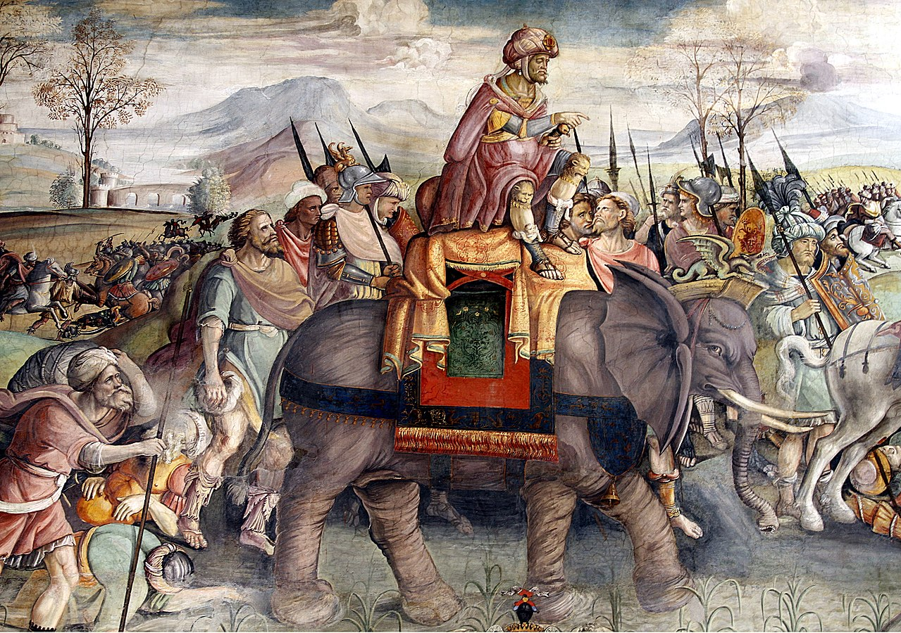

Aníbal Barca
Aníbal Barca (247 a.C.-183 a.C.), conhecido também apenas por Aníbal, foi um general e estadista cartaginês. É considerado um dos maiores estrategas militares da história.

Representação da famosa travessia de Aníbal pelos alpes com os seus
elefantes.